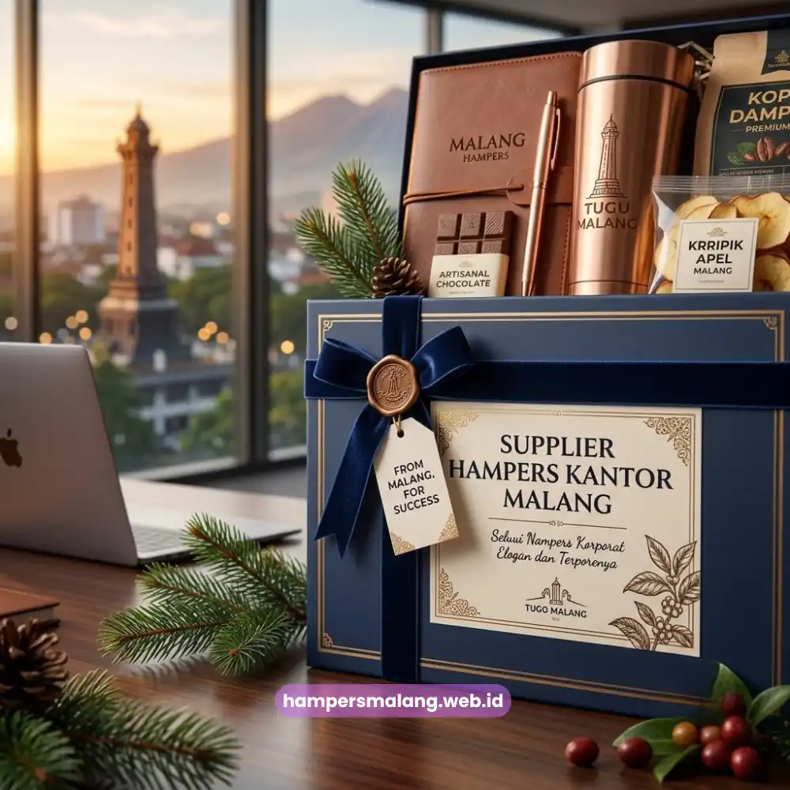

Supplier hampers kantor Malang adalah penyedia jasa hampers korporat yang melayani kebutuhan perusahaan untuk klien, mitra, dan karyawan dengan kualitas premium dan pengerjaan custom logo.
- Supplier hampers kantor Malang melayani pemesanan satuan hingga partai besar untuk kebutuhan korporat.
- Hampers dapat dikustomisasi dengan logo perusahaan untuk memperkuat citra brand di mata klien dan mitra.
- Harga hampers kantor bervariasi tergantung isi, kemasan, dan jumlah pemesanan.
- Pemesanan dapat dilakukan secara online dengan pengiriman ke area Malang Raya dan sekitarnya.
- Hampers Malang menyediakan layanan konsultasi gratis untuk membantu menentukan paket yang sesuai anggaran.
Bagi perusahaan yang berkantor di Malang, mencari supplier hampers kantor yang tepat sering kali menjadi tugas penting menjelang momen penting seperti akhir tahun, Lebaran, atau perayaan ulang tahun perusahaan.
Siapa yang membutuhkan hampers kantor? Umumnya divisi HRD, sekretaris eksekutif, dan tim procurement perusahaan yang ingin memberikan apresiasi kepada karyawan, klien, atau mitra bisnis.
Kapan hampers kantor paling sering dipesan? Momen yang paling umum adalah akhir tahun, hari raya keagamaan, ulang tahun perusahaan, dan acara peluncuran produk.
Mengapa memilih supplier lokal di Malang penting? Karena proses pengerjaan lebih cepat, biaya pengiriman lebih efisien, dan komunikasi dengan tim produksi menjadi lebih mudah.
Sebagai kota yang berkembang pesat dari sisi bisnis dan industri, Malang memiliki kebutuhan yang terus meningkat akan layanan hampers korporat yang profesional.
Perusahaan tidak lagi sekadar mencari kotak berisi produk, melainkan sebuah representasi identitas brand yang dikemas secara elegan.
Hampers Malang hadir untuk menjawab kebutuhan tersebut dengan pendekatan yang mengutamakan kualitas, konsistensi, dan kemudahan pemesanan.
Apa Itu Hampers Kantor dan Mengapa Perusahaan Membutuhkannya?
Hampers kantor adalah paket hadiah korporat berisi produk pilihan yang dikemas rapi untuk diberikan kepada klien, mitra, atau karyawan sebagai bentuk apresiasi dan penguat relasi bisnis.
Hampers kantor berbeda dengan parcel biasa karena disusun dengan mempertimbangkan citra perusahaan yang mengirimkannya. Isi hampers biasanya mencakup makanan ringan premium, minuman, merchandise, hingga produk lokal khas daerah.
Kemasan hampers kantor umumnya menonjolkan warna netral atau warna brand perusahaan agar terlihat profesional saat diterima oleh penerima, baik itu klien korporat maupun kolega internal.
Kebutuhan akan hampers kantor terus meningkat seiring dengan tumbuhnya budaya corporate gifting di Indonesia, khususnya menjelang musim hari raya dan penghujung tahun ketika banyak perusahaan ingin menyampaikan rasa terima kasih kepada mitra kerja mereka.
Secara umum, momen-momen seperti ini menjadi puncak permintaan hampers korporat karena bertepatan dengan evaluasi kerja sama tahunan dan perayaan bersama.
Baca Juga: Hampers Lebaran Kantor Malang untuk Klien dan Karyawan
Bagaimana Cara Kerja Supplier Hampers Kantor Malang?
Proses kerja supplier hampers kantor Malang dimulai dari konsultasi kebutuhan, pemilihan paket atau desain custom, produksi dan pengemasan, hingga pengiriman tepat waktu ke alamat tujuan.
Tahapan pertama adalah konsultasi awal, di mana tim akan menanyakan tujuan pemberian hampers, jumlah penerima, dan anggaran yang tersedia.
Setelah itu, klien dapat memilih dari paket yang sudah tersedia atau meminta desain custom sesuai identitas perusahaan, termasuk penambahan logo pada kemasan atau kartu ucapan.
Tahap produksi kemudian dilakukan dengan memperhatikan kerapian susunan isi dan kualitas kemasan agar hasil akhir terlihat presentable.
Setelah proses produksi selesai, hampers akan dikemas ulang dengan perlindungan tambahan untuk memastikan kondisi tetap prima selama pengiriman.
Pengiriman dapat dilakukan langsung ke kantor pemesan atau didistribusikan satu per satu ke alamat masing-masing penerima, tergantung kebutuhan perusahaan.
Apa Saja Jenis Hampers Kantor yang Tersedia?
Jenis hampers kantor umumnya terbagi menjadi hampers makanan, hampers minuman, hampers merchandise, dan hampers kombinasi yang disesuaikan dengan segmen penerima serta tujuan pemberian.
Hampers Makanan dan Minuman Premium
Kategori ini menjadi pilihan paling populer karena praktis dan disukai hampir semua kalangan. Isi hampers biasanya mencakup camilan premium, cokelat, kopi, atau teh berkualitas yang dikemas dalam kotak elegan.

Hampers Merchandise Berlogo Perusahaan
Hampers jenis ini berisi barang-barang fungsional seperti tumbler, notebook, atau alat tulis yang dicetak dengan logo perusahaan. Hampers merchandise cocok digunakan sebagai media branding jangka panjang karena barangnya dapat dipakai berulang kali oleh penerima.
Hampers Kombinasi untuk Kebutuhan Khusus
Hampers kombinasi menggabungkan makanan, minuman, dan merchandise dalam satu paket. Jenis ini sering dipilih perusahaan yang ingin memberikan kesan lebih istimewa kepada klien atau mitra strategis.
Mengapa Hampers Custom Logo Penting untuk Branding Perusahaan?
Hampers custom logo penting karena berfungsi sebagai media branding yang meninggalkan kesan profesional sekaligus memperkuat pengenalan identitas perusahaan di mata klien dan mitra bisnis.
Ketika logo perusahaan tercetak rapi pada kemasan atau produk di dalam hampers, penerima akan lebih mudah mengingat brand yang mengirimkannya.
Hal ini menjadikan hampers bukan sekadar hadiah, melainkan juga alat pemasaran yang halus namun efektif. Konsistensi visual seperti warna brand dan logo yang presisi juga mencerminkan profesionalisme perusahaan dalam menjalin relasi bisnis.
Bagaimana Menentukan Anggaran Hampers Kantor yang Tepat?
Anggaran hampers kantor sebaiknya ditentukan berdasarkan jumlah penerima, tujuan pemberian, dan tingkat kedekatan relasi bisnis agar nilai hampers tetap proporsional dan bermakna.
Perusahaan umumnya membedakan anggaran antara hampers untuk klien utama, mitra kerja, dan karyawan internal.
Klien utama biasanya mendapatkan hampers dengan nilai lebih tinggi karena mencerminkan tingkat kepentingan relasi bisnis, sementara hampers untuk karyawan internal cenderung lebih sederhana namun tetap berkesan.
Menentukan anggaran di awal juga membantu proses seleksi paket menjadi lebih efisien dan terarah.
Apa Saja Kesalahan Umum saat Memesan Hampers Kantor?
Kesalahan umum saat memesan hampers kantor meliputi pemesanan mendadak tanpa mempertimbangkan waktu produksi, tidak menyesuaikan isi hampers dengan penerima, dan mengabaikan konsistensi branding pada kemasan.
Banyak perusahaan memesan hampers terlalu dekat dengan tanggal pengiriman sehingga waktu produksi menjadi terburu-buru dan berisiko menurunkan kualitas hasil akhir.
Kesalahan lain adalah memilih isi hampers yang kurang sesuai dengan preferensi penerima, misalnya memberikan produk yang terlalu umum tanpa mempertimbangkan segmen klien.
Selain itu, mengabaikan elemen branding seperti logo atau warna perusahaan pada kemasan dapat membuat hampers kehilangan nilai representatifnya sebagai media komunikasi brand.
Tips Memaksimalkan Hampers Kantor sebagai Media Relasi Bisnis
Hampers kantor dapat dimaksimalkan sebagai media relasi bisnis dengan menambahkan sentuhan personal, memperhatikan waktu pengiriman, dan menjaga konsistensi kualitas pada setiap pemesanan.
Menambahkan kartu ucapan personal dengan nama penerima akan membuat hampers terasa lebih istimewa dibandingkan hampers generik. Waktu pengiriman juga perlu diperhitungkan agar hampers sampai tepat sebelum atau pada momen yang dituju, bukan setelahnya.
Konsistensi kualitas pada setiap pemesanan turut menjaga reputasi perusahaan di mata klien, terutama jika pemberian hampers dilakukan secara rutin setiap tahun.
Kapan Waktu Terbaik Memesan Hampers Kantor di Malang?
Waktu terbaik memesan hampers kantor di Malang adalah beberapa minggu sebelum momen penting, seperti akhir tahun, hari raya, atau acara korporat, agar proses produksi dan pengiriman berjalan lancar.
Memesan hampers jauh-jauh hari memberikan ruang bagi tim produksi untuk menyusun desain custom logo, memilih isi hampers yang paling sesuai, dan melakukan quality control secara menyeluruh sebelum pengiriman.
Selain itu, pemesanan lebih awal juga membantu perusahaan menghindari kenaikan biaya produksi mendadak yang biasa terjadi saat permintaan sedang tinggi menjelang musim hari raya.
Secara umum, periode menjelang akhir tahun dan hari raya keagamaan menjadi masa dengan permintaan hampers korporat yang cenderung meningkat dibandingkan bulan-bulan lainnya, sehingga perencanaan lebih awal akan sangat membantu kelancaran proses pemesanan.
Bagaimana Hampers Malang Mendukung Kebutuhan Korporat Anda?
Hampers Malang mendukung kebutuhan korporat dengan menyediakan layanan konsultasi, desain custom logo, produksi berkualitas, hingga pengiriman yang dapat diandalkan untuk perusahaan di Malang dan sekitarnya.
Sebagai supplier hampers kantor Malang, Hampers Malang memahami bahwa setiap perusahaan memiliki kebutuhan dan karakter brand yang berbeda.
Oleh karena itu, layanan yang diberikan tidak hanya sebatas menyediakan produk, tetapi juga mendampingi klien dari tahap perencanaan hingga hampers siap diterima oleh penerima.
Pendekatan ini bertujuan memastikan setiap hampers yang dikirim benar-benar merepresentasikan citra profesional perusahaan pemesan.
Memilih supplier hampers kantor Malang yang tepat akan membantu perusahaan menyampaikan apresiasi sekaligus memperkuat citra brand secara profesional.
Hampers Malang siap membantu Anda menyusun hampers korporat, mulai dari paket siap pakai hingga desain custom logo, dengan proses pemesanan yang mudah dan pengiriman yang dapat diandalkan.
Segera hubungi Hampers Malang untuk konsultasi gratis dan wujudkan hampers kantor yang berkesan bagi klien maupun karyawan Anda.
Tanya Jawab Seputar Supplier Hampers Kantor Malang
Hampers kantor adalah paket hadiah korporat berisi produk pilihan yang diberikan perusahaan kepada klien, mitra, atau karyawan sebagai bentuk apresiasi dan penguat relasi bisnis.
Ya, hampers kantor dapat dikustomisasi dengan logo perusahaan pada kemasan, kartu ucapan, maupun merchandise di dalamnya untuk memperkuat identitas brand.
Waktu produksi hampers kantor dalam jumlah besar umumnya bervariasi tergantung kompleksitas desain dan jumlah pesanan, sehingga sebaiknya dipesan jauh sebelum tanggal pengiriman.
Sebagian besar supplier hampers kantor melayani pengiriman ke luar kota, namun sebaiknya konfirmasi langsung mengenai jangkauan dan estimasi biaya pengiriman.
Pemesanan dapat dilakukan dengan menghubungi tim Hampers Malang untuk konsultasi kebutuhan, memilih paket atau desain custom, lalu melanjutkan ke proses produksi dan pengiriman.

Butuh Hampers Kantor?
Solusi Hampers & Corporate Gift Kreatif di Malang Raya.
Ditulis oleh Tim Maroon Souvenir
Sahabat mahasiswa dan pelaku bisnis di Malang Raya. Berpengalaman menangani merchandise event kampus, instansi pemerintahan, dan hotel berbintang di Batu.